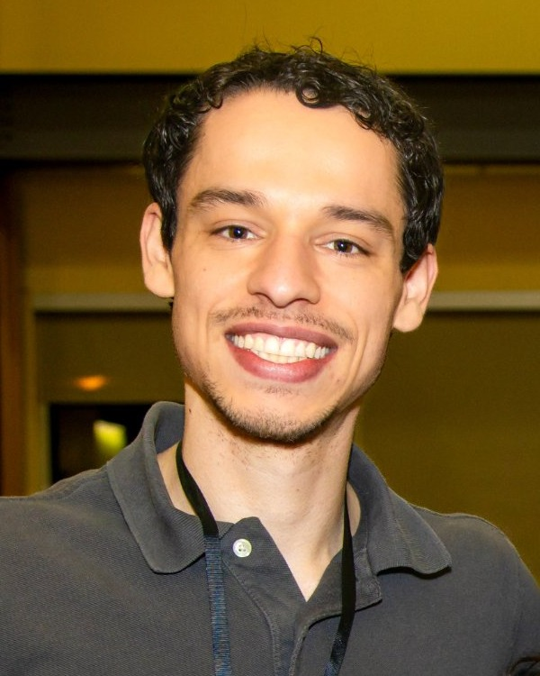
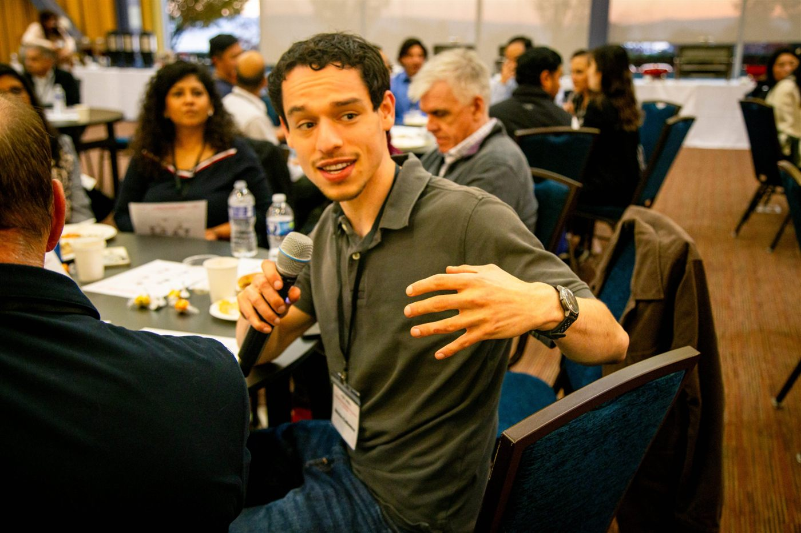
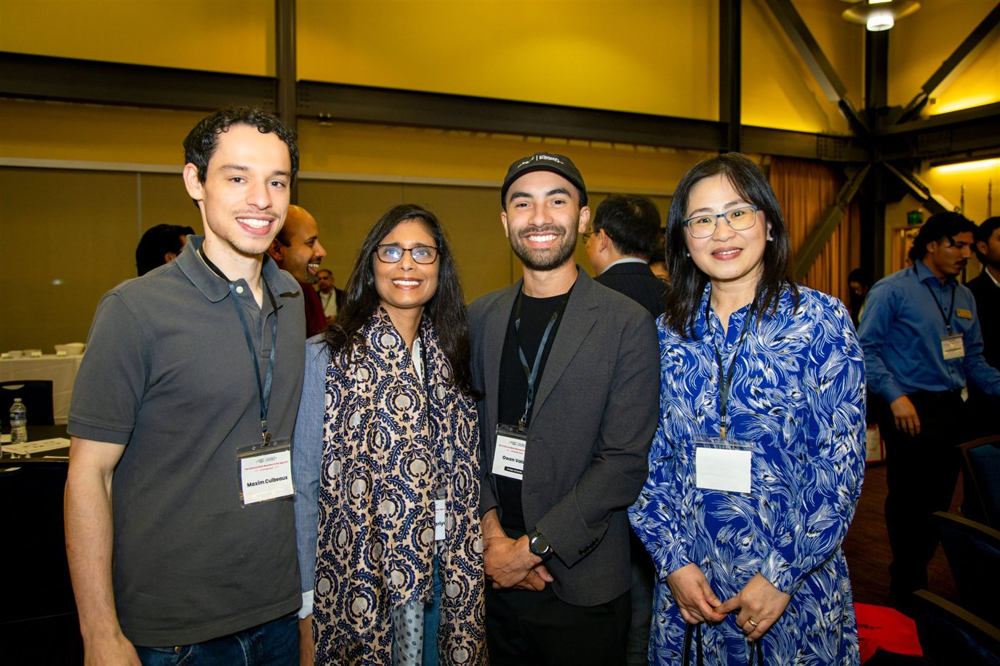

Careers / Live project
Launchpad
I started Launchpad as a side project because finding an internship felt scattered. Students can search internships, see them on a map, and track their applications.
Bay Area, California
Maxim Culbeaux, Consultant at Baker and Welsh, MBA Candidate at Cal State East Bay.
Explore my workLearning by doing. Building with purpose.
01 / About

Maxim Culbeaux is a natural builder who learns by doing. As a Bay Area native, he grew up singing in choirs that traveled across continents, and he later spent eight years coaching gymnastics at UC Berkeley. In both, he learned that good systems work only when you understand the people inside them.
He has a B.S. in Liberal Studies with a concentration in music from Cal Poly San Luis Obispo and is now an MBA candidate at Cal State East Bay, concentrating in Business Analytics and AI Integration. He works as a Consultant at Baker and Welsh, helping businesses expand and modernize existing infrastructure, using practical AI that gives workers the tools to succeed instead of replacing them, people first, tools second.
As a side project, he built Launchpad, an internship finder for college students, simplifying their search.
I consult with businesses to expand and modernize existing infrastructure, using practical AI that gives workers the tools to succeed instead of replacing them.
My role covers operations and sales for a mushroom farm, including ordering, the website, and restaurant outreach.
For eight years, I coached gymnastics and worked with students in the gym every week.
02 / Projects
Careers / Live project
I started Launchpad as a side project because finding an internship felt scattered. Students can search internships, see them on a map, and track their applications.
Community / Kiroween hackathon
For my solo Kiroween entry, I created a community board where people scan a paper flyer to post it and browse postings on a map, with categories and email alerts for categories they watch.


03 / Contact